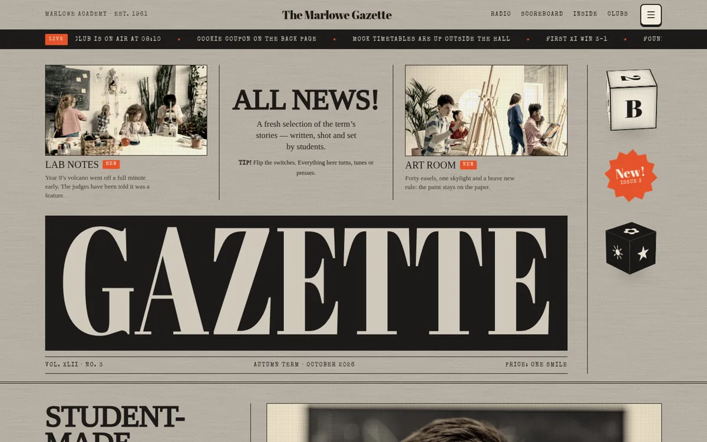
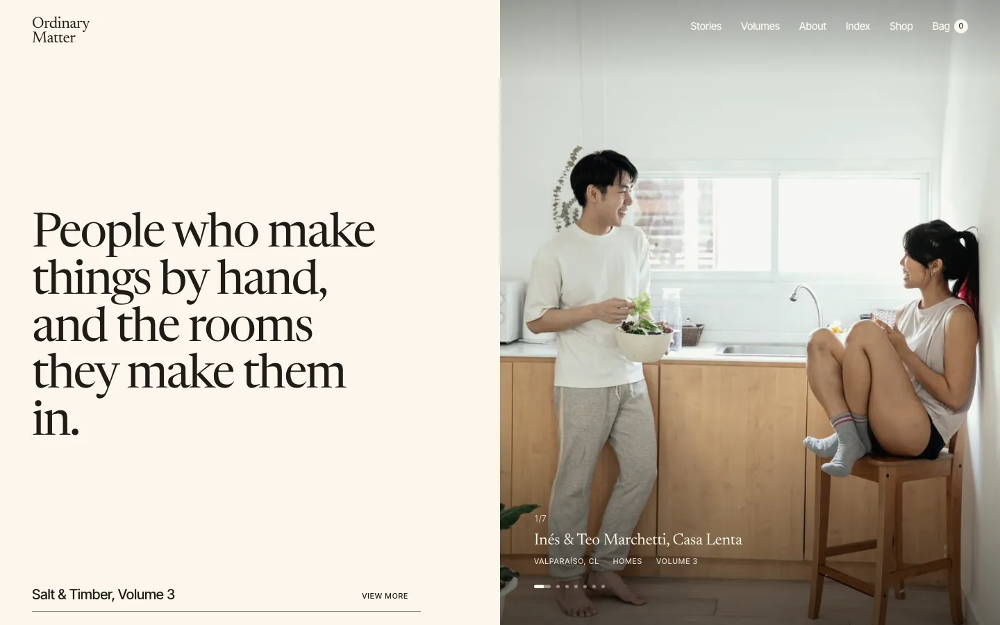
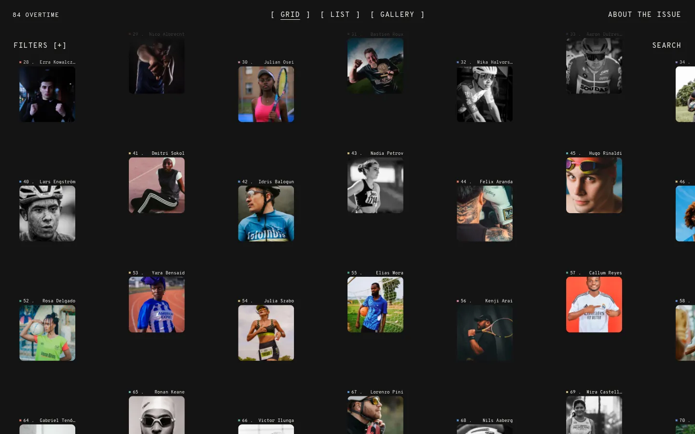
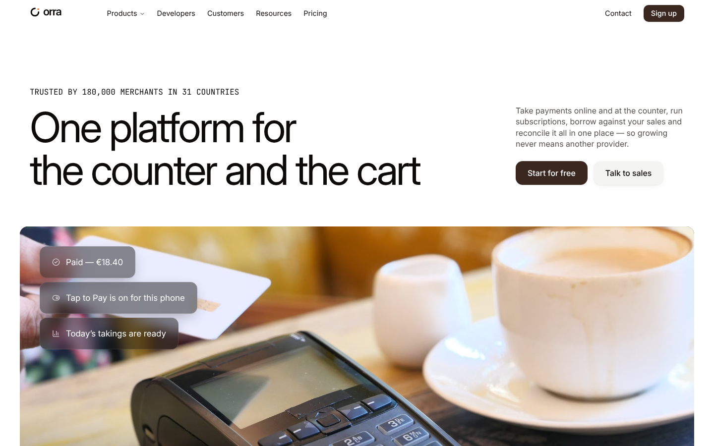

Remix · Editorial · Education
Marlowe Gazette
A vintage school magazine
Clones it into a folder you pick, as a new project. No Codecaine yet? Get it free
Nothing opened? Codecaine has to be installed and opened once for this link to work. Install Codecaine, or download the project and open its folder.

About
A vintage school magazine: a tossed-in newspaper front page, a working tabletop radio that reads the daily brief, an embossed 3D LED scoreboard, retro keys, knobs and switches, and CSS-3D cubes and carousels on the margins.
Designed for
- School and college magazines, yearbooks and student newsrooms
- Anything that should feel like a printed broadsheet with a retro workshop on top
- Pages that mix editorial type with tactile controls: radios, LED boards, stamps and switches
- Learning how to build editor-ready motion and 3D components with @canvas/react
Details
- Version
- 1.0.0
- Updated
- Oct 2, 2026
- Pages
- 2
- Framework
- vite
- Styling
- tailwindcss@4
- Dev port
3340- SDK
@canvas/react 0.1.1- License
- MIT
- Download
- 1.3 MB · 77 files
Keywords
Every page
2 pages, as they open at 1440px.


More remixes

Ordinary Matter — Editorial Publication
A quiet, cream-paper editorial site for Ordinary Matter, a publication about people who make things by hand

Overtime
A long-read sports magazine on an infinite WebGL canvas

Orra — Payments Platform
A warm, restrained landing page for Orra, a payments platform